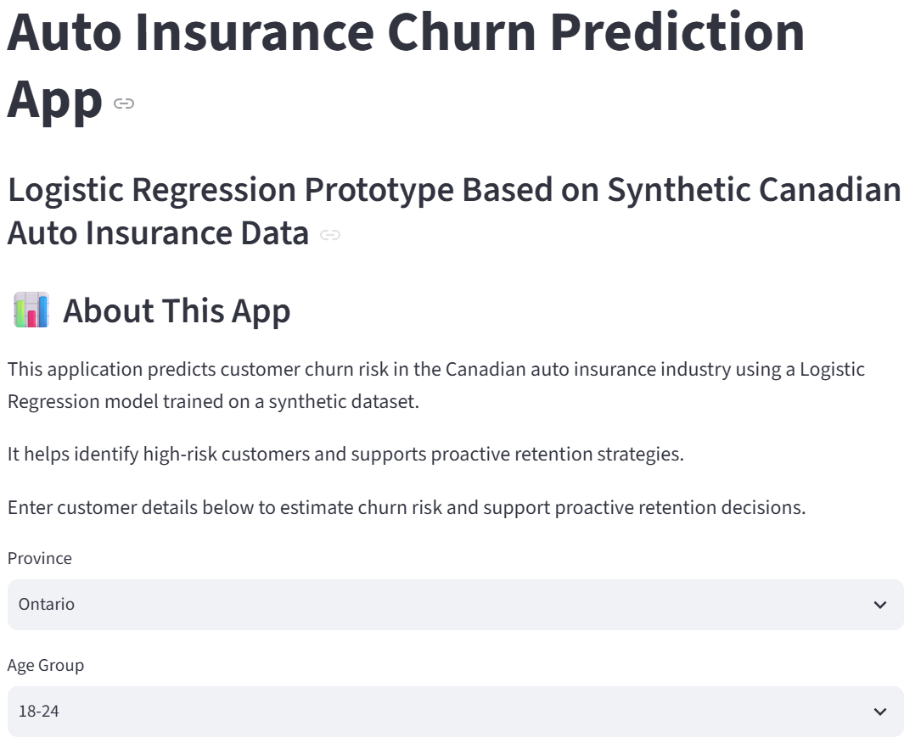
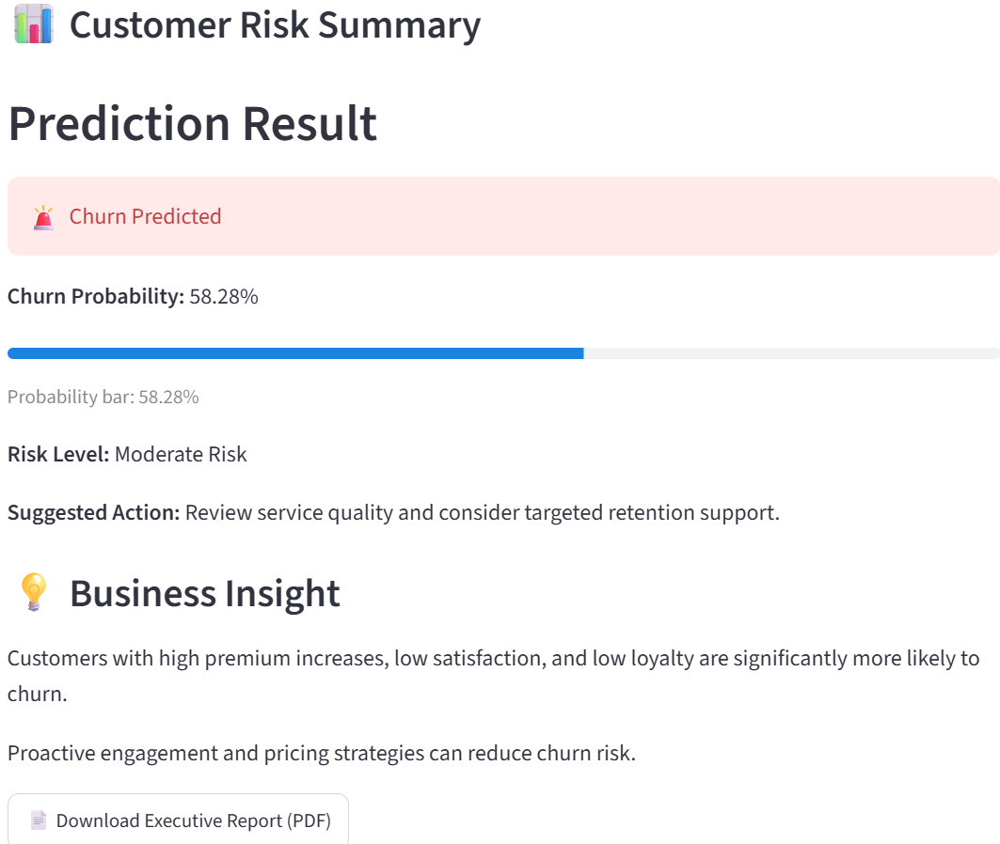
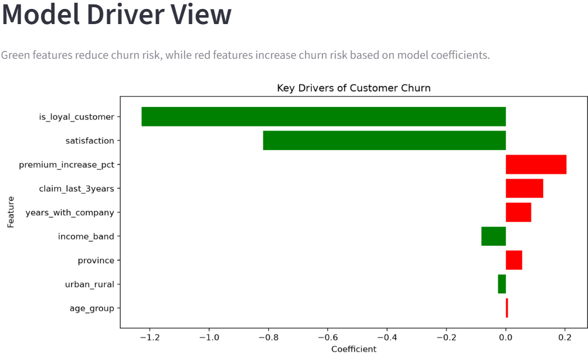
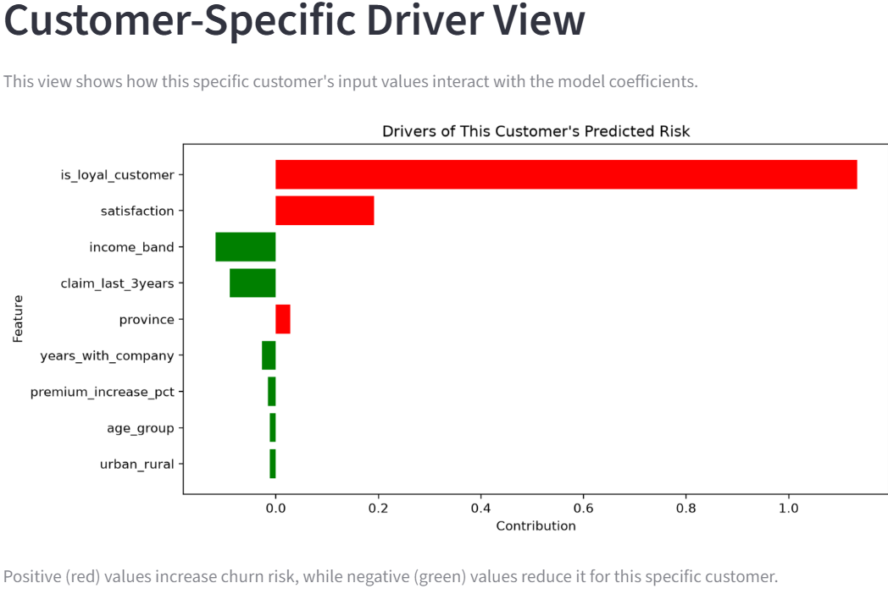

A machine learning prototype exploring customer churn risk in Canadian auto insurance using synthetic customer data, exploratory analysis, model comparison, and an interactive Streamlit application.
Customer churn can affect insurers' recurring revenue and acquisition costs. This project explores how customer characteristics, pricing changes, claims, satisfaction, and loyalty could be used to estimate churn risk and inform proactive retention decisions.
Estimate which customer profiles may have a higher probability of leaving.
Evaluate predictive approaches with particular attention to identifying customers who churn.
Present risk estimates and model drivers in an accessible interactive prototype.
The analysis uses a synthetic dataset of 10,000 Canadian auto insurance customer records. These are simulated observations, not actual policyholder records, so findings demonstrate a modelling workflow rather than validated industry relationships.
Province, age group, income band, urban/rural location, years with company, recent claims, premium increase, satisfaction, and loyalty.
Exploratory data analysis, feature preparation, classification model training, performance comparison, and interactive presentation of results.
Three classification models were evaluated. Logistic Regression was selected for the prototype because it offered a more useful balance of overall accuracy and churn recall for the project's retention objective.
Approximately 65% churn recall. Selected for the interactive prototype.
Approximately 33% churn recall.
Approximately 16% churn recall, despite its higher overall accuracy.
Performance values are from the synthetic-data experiment and should not be interpreted as real-world deployment performance.
The Streamlit prototype lets users enter a customer profile and view the estimated churn probability, risk category, suggested action, and model-driver visualizations.

Customer profile inputs for a hypothetical insurance policyholder.
The application displays a churn classification and probability alongside a risk label and suggested retention action.
The example shown is a model output for one hypothetical customer profile, not a measured churn rate across the dataset.

The app presents both an overall model coefficient view and a customer-specific contribution view. These are explanations of the fitted model, not evidence that any feature causes churn.

Model Driver View: direction and magnitude of fitted coefficients.

Customer-Specific Driver View: how the example inputs contribute to the model score.
Within the simulated data, larger premium increases and lower satisfaction were associated with higher churn risk.
Newer customers generally showed higher churn risk, while the simulated loyalty indicator was associated with lower risk.
The most accurate model did not identify as many churn cases as Logistic Regression, highlighting the importance of recall in a retention use case.
Risk summaries and coefficient visualizations help communicate model outputs to nontechnical stakeholders.
Explore the interactive churn prediction application, source notebook, synthetic dataset, and supporting documentation.